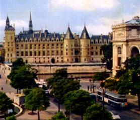
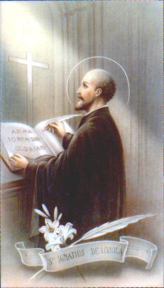
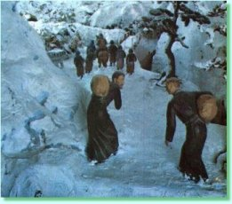
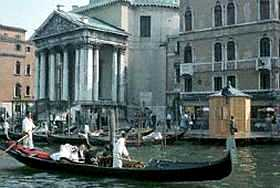
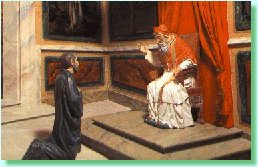
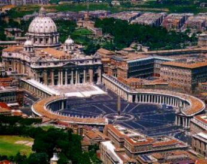

Foi também no Colégio de Santa
Bárbara que conheceu e construiu uma solida 
Xavier logo que se encontrou com Íñigo (Ignácio) de Loyola, notou que algo especial irradiava de sua pessoa. Tinha uma simpatia tão irresistível que o atraía. Quando Ignácio estava em Manresa, escreveu um livro sobre Exercícios Espirituais, resultado do aprofundamento de seus estudos sobre a Sagrada Escritura e a Doutrina Cristã. Posteriormente o livro exerceu no mundo uma grande influencia religiosa.
Naquele ano em Paris, Ignácio estava hospedado num hospital, vivendo de caridade. Entretanto, as reuniões piedosas que organizava com dedicação e empenho, produziu tumultuosos protestos, inclusive de professores que tinham idéias diferentes das que ele pregava, principalmente quando focalizava a moral cristã. Numa ocasião quase o açoitaram publicamente. Por essa razão, limitou-se ao cultivo espiritual somente em companhia de poucas e escolhidas pessoas. Ao começar os seus estudos de filosofia no Colégio de Santa Bárbara, conseguiu ocupar o mesmo quarto onde estavam Fabro e Xavier, que terminavam os estudos.
Xavier recebeu Ignácio com hostilidade, recordando que na Espanha os seus irmãos tinham lutado contra os irmãos dele. Todavia com o passar dos dias, Ignácio ganhou sua amizade e também a amizade de Fabro, que lhe repetia as lições ouvidas na aula. Nas conversas e nos planos, os três se entusiasmaram com a idéia de irem a Jerusalém e diante do Santo Sepulcro se consagrarem à salvação das almas.

-"¿Qué quieres que haga?"(O que quer que eu faça?)
"Que hagas los Ejercicios Espirituales". (Que faças os Exercícios Espirituais), respondeu Ignácio.
E durante 40 dias ele praticou diversos Exercícios sob a orientação de Ignácio. Entre as diversas penitencias, passou quatro dias em jejum total (sem nada comer). Assim que concluiu a penitência, estava totalmente convertido num "precioso vulcão de amor a CRISTO". Sua maior ambição se revelou no desejo incontido de converter almas. Francisco Xavier permaneceu em Paris durante 11 anos.
O APÓSTOLO JESUÍTA
Depois que Ignácio conquistou Xavier e Fabro, conseguiu trazer para junto dele: Laínez, Salmerón, Bobadilla e Simón Rodríguez.
No dia 15 de Agosto de 1534, Festa da Assunção de Nossa Senhora aos Céus, todos eles foram a Capela de Montmartre. Fabro que se havia ordenado sacerdote, celebrou a Santa Missa e todos fizeram votos de pobreza e castidade; fizeram também o voto de juntos irem a Terra Santa e diante do Santo Sepulcro colocarem as suas vidas consagradas à salvação das almas. Aqueles homens foram os primeiros jesuítas, os fundadores da "COMPANHIA DE JESUS", também chamada de "COMUNIDADE DOS PADRES JESUÍTAS". Saíram dali felizes e juntos permaneceram num bosque, onde almoçaram e passaram o dia em íntima conversação.
Ignácio voltou a Espanha, a fim de ajustar negócios e visitar as famílias de seus companheiros. Combinaram encontrar-se em Veneza.
Considerando que a viagem pela Itália,
atravessando a região de Saboya era 
Seguiram viagem por caminhos nevados, cheios de barro e de hereges, inimigos do Papa. Depois de provocados por alguns deles, disputaram conhecimento doutrinário com um dos chefes, que ficou derrotado sem argumentos e sem palavras. Furioso o herege reagiu dizendo que ia metê-los no cárcere. Mas eles não esperaram, fugiram antes. Depois de atravessarem os altos montes nevados da Suíça, com seus belos Lagos, chegaram a Veneza em Janeiro de 1537. Lá já se encontrava Ignácio que os esperava.

Na primeira oportunidade, Ignácio enviou os seus companheiros a Roma, com o objetivo de receberem a benção do Papa com a intenção de viajarem a Terra Santa.
Desde Veneza até Ancona foram num barco. Mas como não tinham dinheiro para a passagem o capitão ficou furioso. Desembarcaram em Ancona para empenhar um breviário e poderem pagar a passagem do barco. Contudo na cidade conseguiram bastante dinheiro de pessoas caridosas. Tiraram o breviário da penhora e pagaram o valor das passagens ao comandante do barco.
Foram ao famoso Santuário de Loreto, onde segundo afirmam algumas lendas, se encontra a “casinha de Nazaré da Virgem Mariaâ€, que foi trazida pelos Anjos. Passaram três dias felizes dedicados a oração e depois, seguiram a pé pelos campos para Roma. Cruzaram os Apeninos e os Montes Sabinos, enfrentaram chuvas, barro, caminhos pedregosos e todas as dificuldades. Nas cidades por onde passavam dormiam no hospício; quando estavam no campo, dormiam nos barracos abandonados, nas grutas, embaixo da copa de uma árvore frondosa, onde conseguissem se alojar.
Os Jesuítas chegaram a Roma no mês de Abril de
1537. Logo foram encaminhados a Sua Santidade o Papa Paulo III, que os recebeu 
Em missão da Comunidade, Ignácio mandou Xavier e Bobadilla a Bolonha. E viajaram repletos de cuidados. Da mesma forma que em Veneza, também em Bolonha era perigoso sair nas ruas a noite, porque o pirata Barbarroxa prendia os cristãos. Mesmo assim, eles não se acovardaram e nem fugiram de suas missões: em Bolonha pregavam o Evangelho em todos os lugares e cuidavam dos enfermos no Hospital. Foi nesta cidade durante a celebração de uma Santa Missa, que Xavier teve um primeiro êxtase. Terminada a Santa Missa, ainda que o coroinha lhe ajudasse a tirar a vestimenta, ele se mantinha distante e desligado das coisas ao redor.
ORGANIZANDO A COMUNIDADE
Decidiram transferir a Comunidade para
Roma. Conseguiram um primeiro local, embora fosse um miserável casebre,
nele 
Meses depois, apresentou-se a Ignácio o embaixador de Portugal D. Pedro Mascarenhas, que foi solicitar em nome do Rei D. João III, seis missionários para a Índia. Respondeu Ignácio: “Señor Embajador, si mando seis para la India, cuántos me quedan para el resto del mundo? Os enviaré dos.†(Senhor Embaixador, se envio seis para a Índia, quantos me sobrarão para o resto do mundo? Vou enviar dois).
Foram escolhidos Simón Rodriguez e Francisco Xavier.
Na manhã do dia 16 de Março de 1540, Xavier foi pedir a benção ao Papa e seguiram os dois padres com o Embaixador a caminho de Portugal.